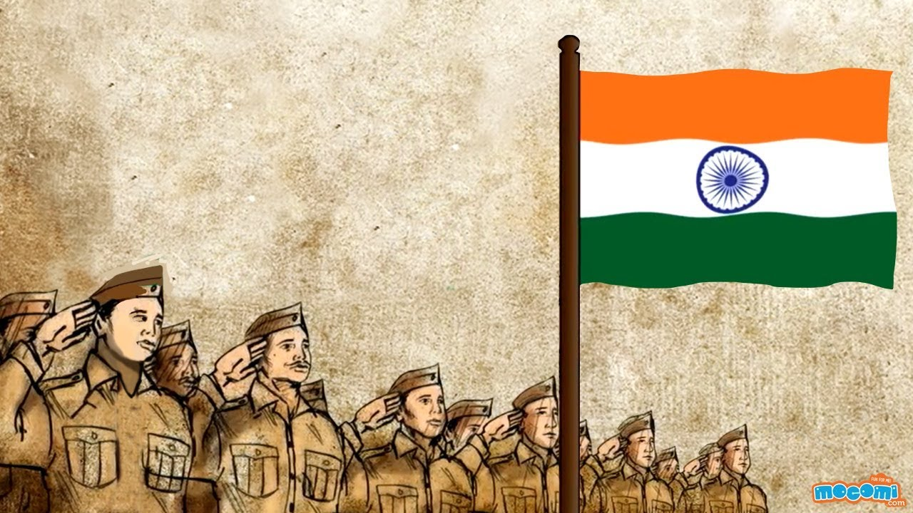
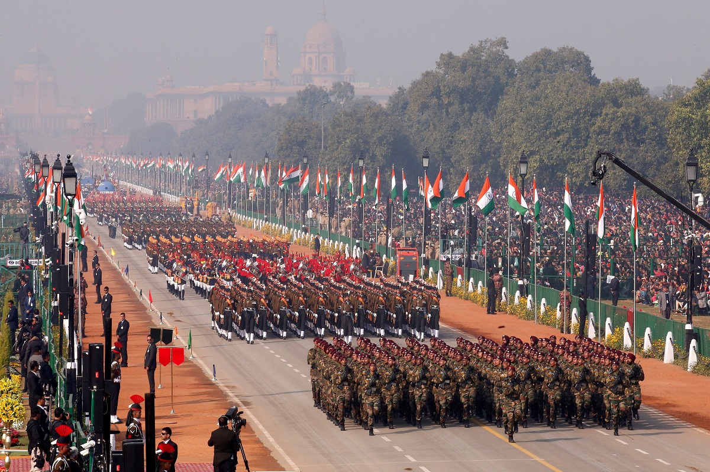

History
India’s Independence
Independence Day, in India, is a national holiday celebrated annually on august 15. Independence Day marks the end of British rule in 1947 and the establishment of a free and independent Indian nation. It also marks the anniversary of the partition of the subcontinent into two countries, India and Pakistan , which occurred at midnight on August 14–15, 1947. (In Pakistan, Independence Day is celebrated on August 14.)

Read More Here
Republic day
Republic Day is a national holiday in India, when the country marks and celebrates the date on which the Constitution of India came into effect on 26, January 1950, replacing the Government of India Act as the governing document of India and thus, turning the nation into a newly formed republic.Republic Day signifies the right spirit of Independent and individual India. The important symbols of the festival include the exhibition of military equipment, the national flag and military equipment.

Read More Here
History of diwali
Diwali is the five-day Festival of Lights, celebrated by millions of Hindus, Sikhs and Jains across the world. Diwali, which for some also coincides with harvest and new year celebrations, is a festival of new beginnings and the triumph of good over evil, and light over darkness.In one of the main stories in Hindu mythology, Diwali is the day Lord Rama, his wife Sita Devi and brother Lakshmana return to their homeland after 14 years in exile. The villagers lit a path for Rama, who had defeated the demon king Ravana

Read More Here